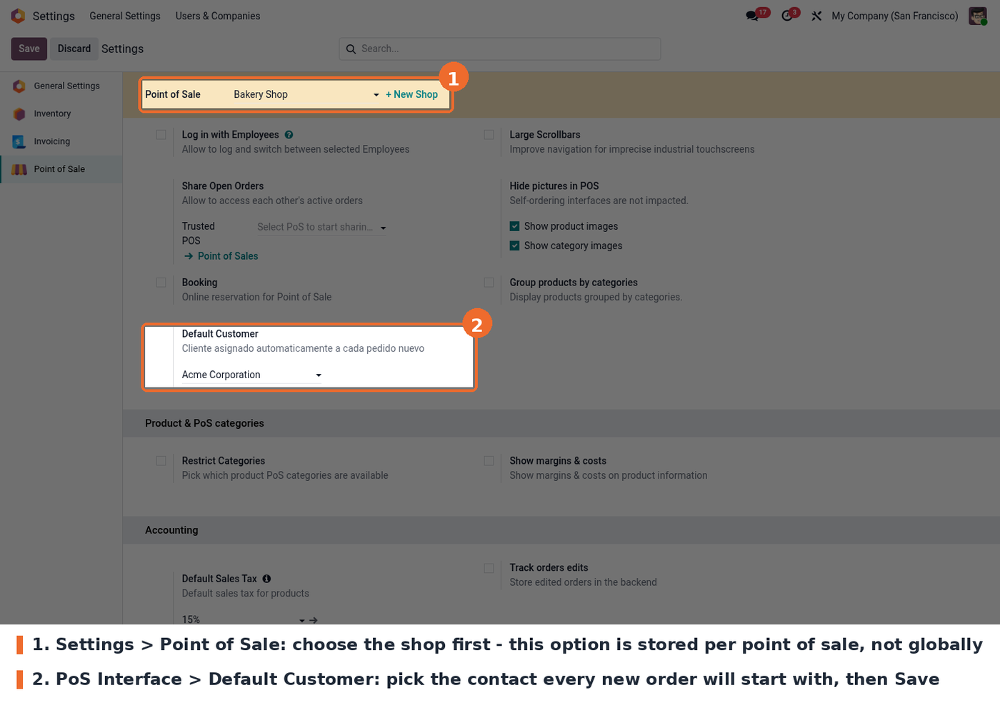
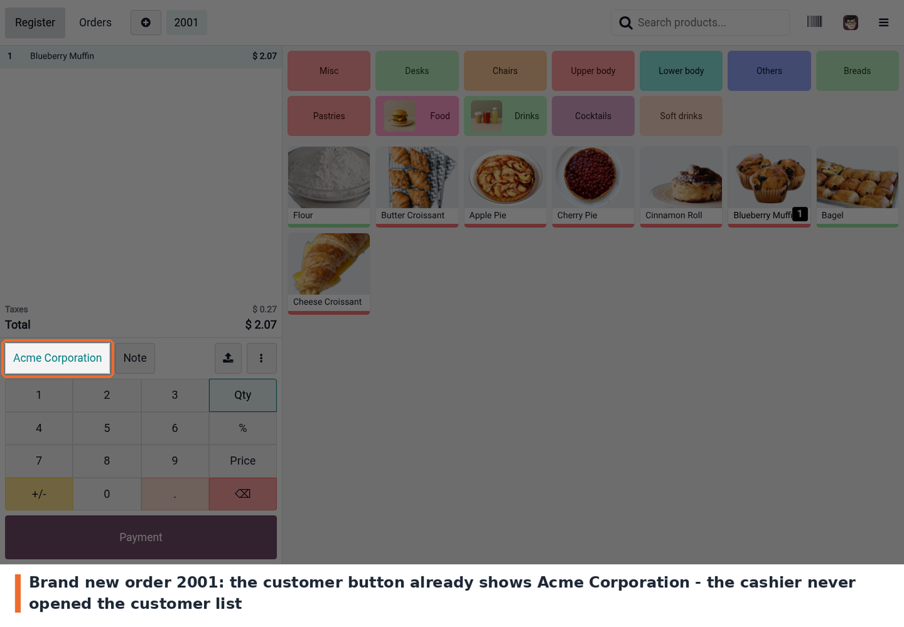
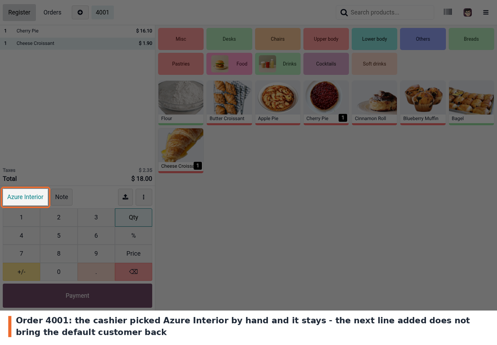

This module lets you set a default customer per Point of Sale. Every new order is created with that customer already assigned, so the cashier does not have to open the customer list for the usual walk-in sale, and the receipt and the resulting POS order are attributed to that partner.
The default is only a starting point: the cashier can replace the customer at any time, as usual, and that choice stays on the order. The module also makes sure the configured customer is always loaded into the POS session. It works on Odoo 19.0, Community and Enterprise.
The setting is stored on the point of sale (pos.config), not globally, so it has to be set
on each shop that needs it. Shops without a Default Customer keep behaving exactly like
standard Odoo.
After changing the setting, reopen the Point of Sale from the backend (Open Register / Continue Selling). Reloading the POS tab is not enough for the new value to reach the session.
The customer is picked in the Point of Sale settings, in the PoS Interface block.

Default Customer field in the Point of Sale settings
A new order already has the customer. Open the Point of Sale and start an order: the customer button at the bottom of the ticket already shows the configured customer. Nobody opened the customer list.

New POS order with the default customer already assigned
The cashier can still change it. Tapping the customer button opens the usual customer list; once another customer is selected, that choice stays on the order — adding more lines does not bring the default customer back.

The cashier replaces the default customer by hand
pos_customer_id not being properly
saved. The value is saved (through the related field); the warning comes from the generic
pos_* prefix handling in Odoo's POS settings and is harmless.static/description/icon.png is 512x512 px, while the core modules use 100x100 px. It
should be resized or replaced.views/pos_config_view.xml)
inside an otherwise English module. It should be written in English and translated through
the i18n files.